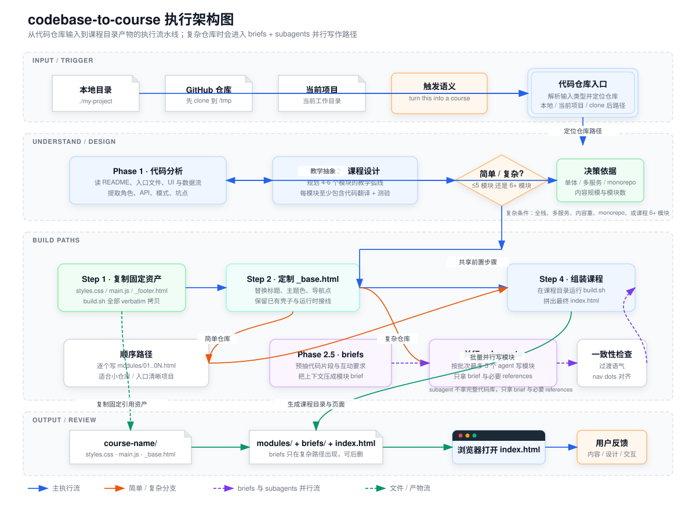

这份 deck 不是用户教程，而是给团队解释 codebase-to-course 为什么这样设计、复杂路径如何扩展，以及它能否复制到别的教学生成器。
codebase-to-course 把传统 CS 教学反过来：先有产品体验，再把体验背后的系统拆开。对团队来说，这意味着它天然适合做"代码库讲解层"，而不是"教学内容编辑器"。
用户先感受到功能，再理解底层。课程从他们已经知道的体验开始，而不是从抽象术语开始。
大量交互、图示、代码翻译块替代长文。内容形态本身就是设计约束的一部分。
每个模块都要回到真实收益：更会指挥 AI、更会排查问题、更会做取舍。
这个 skill 的第一件事不是问用户"你的产品做什么"，而是自己去看仓库。输入接口被压成三类，但后续分析路径保持一致。
README、入口文件、UI、服务层，先回答"这个东西到底在干嘛"
找角色、API、外部依赖、缓存与错误处理，形成系统心智图
把代码理解转译成 4-6 个教学模块，而不是文件清单
每个模块都必须回答：学完之后，用户能更好地做什么
当代码库单一、入口清晰、模块数不高时，skill 不会急着并行。它先复制固定资产，再顺序写每个模块 HTML。
styles.css、main.js_footer.html 与 build.sh_base.html 的标题、主题色、nav dotsmodules/01..0N.html<section class="module">build.sh 组装成 index.html真正支撑 subagents 的不是代理本身，而是 Phase 2.5 先把代码片段、互动要求、前后衔接写成 brief。
先预抽代码、教学弧线和互动元素，避免后续 agent 再去读完整仓库。
按批次最多 3 个 agent 并行写模块，只拿 brief 和必要 references。
回到主上下文统一检查过渡、nav dots、语气和重复解释问题。

点击图片放大查看
输入层、理解层、构建路径层、产物层被明确切开，方便解释职责边界。
真正的分叉不是在"写 HTML"，而是在"是否需要先把上下文压成 brief"。
这张图可以直接迁移为别的 skill 的执行骨架，只需替换中间抽象层与最终产物层。
定义内容密度、比喻策略、quiz 设计、tooltip 原则，约束"教什么、怎么讲"
规定代码翻译、群聊动画、数据流图和交互题的 HTML 模式，约束"如何互动"
作为运行时资产直接复用，不让 agent 每次重新生成 boilerplate
负责装配壳子、导航与最终拼装，把内容写作和页面运行拆成两件事
课程质量高度依赖 Phase 1 的理解正确性。分析错了，后续所有互动都是"漂亮的误导"。
brief 不清楚，就会出现语气漂移、内容重复、模块断裂。并行不是白捡的效率。
README 更像"单 HTML 无依赖"，但 SKILL 实际是目录式构建，而且字体仍依赖 CDN。
SKILL.md 与内容哲学，再改视觉与装配